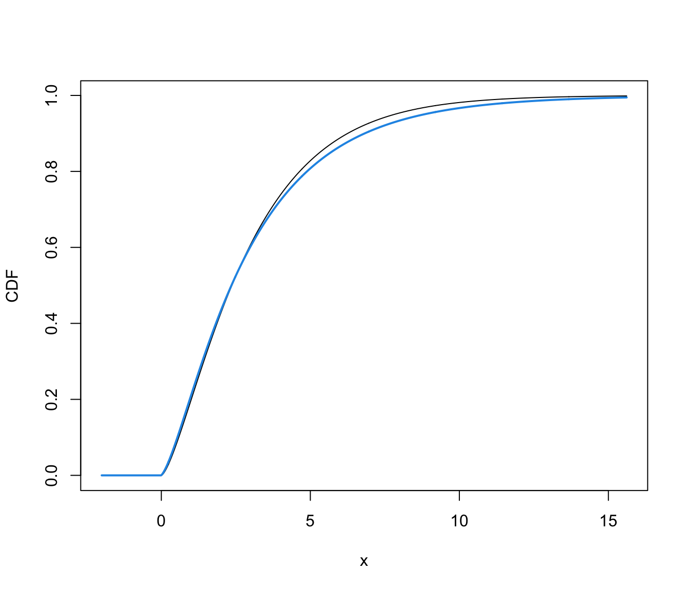

cdfDensityBounded.RdCompute the cumulative density function (cdf) or quantiles of a one-dimensional density for bounded data estimated via transformation-based approach for Gaussian mixtures using densityMclustBounded.
cdfDensityBounded(object, data, ngrid = 100, ...)
quantileDensityBounded(object, p, ...)a densityMclustBounded model object.
a numeric vector of evaluation points.
the number of points in a regular grid to be used as evaluation points if no data are provided.
a numeric vector of probabilities.
further arguments passed to or from other methods.
The cdf is evaluated at points given by the optional argument data. If not provided, a regular grid of length ngrid for the evaluation points is used.
The quantiles are computed using bisection linear search algorithm.
cdfDensityBounded returns a list of x and y values providing, respectively, the evaluation points and the estimated cdf.
quantileDensityBounded returns a vector of quantiles.
# \donttest{
# univariate case with lower bound
x <- rchisq(200, 3)
dens <- densityMclustBounded(x, lbound = 0)
xgrid <- seq(-2, max(x), length=1000)
cdf <- cdfDensityBounded(dens, xgrid)
str(cdf)
#> List of 2
#> $ x: num [1:1000] -2 -1.98 -1.96 -1.94 -1.92 ...
#> $ y: num [1:1000] 0 0 0 0 0 0 0 0 0 0 ...
plot(xgrid, pchisq(xgrid, df = 3), type = "l", xlab = "x", ylab = "CDF")
lines(cdf, col = 4, lwd = 2)

q <- quantileDensityBounded(dens, p = c(0.01, 0.1, 0.5, 0.9, 0.99))
cbind(quantile = q, cdf = cdfDensityBounded(dens, q)$y)
#> quantile cdf
#> [1,] 0.1201876 0.01
#> [2,] 0.5735038 0.10
#> [3,] 2.1815516 0.50
#> [4,] 5.9272841 0.90
#> [5,] 11.5004686 0.99
plot(cdf, type = "l", col = 4, xlab = "x", ylab = "CDF")
points(q, cdfDensityBounded(dens, q)$y, pch = 19, col = 4)
# univariate case with lower & upper bounds
x <- rbeta(200, 5, 1.5)
dens <- densityMclustBounded(x, lbound = 0, ubound = 1)
xgrid <- seq(-0.1, 1.1, length=1000)
cdf <- cdfDensityBounded(dens, xgrid)
str(cdf)
#> List of 2
#> $ x: num [1:1000] -0.1 -0.0988 -0.0976 -0.0964 -0.0952 ...
#> $ y: num [1:1000] 0 0 0 0 0 0 0 0 0 0 ...
plot(xgrid, pbeta(xgrid, 5, 1.5), type = "l", xlab = "x", ylab = "CDF")
lines(cdf, col = 4, lwd = 2)
q <- quantileDensityBounded(dens, p = c(0.01, 0.1, 0.5, 0.9, 0.99))
cbind(quantile = q, cdf = cdfDensityBounded(dens, q)$y)
#> quantile cdf
#> [1,] 0.4136868 0.01
#> [2,] 0.5709887 0.10
#> [3,] 0.7809146 0.50
#> [4,] 0.9347408 0.90
#> [5,] 0.9886214 0.99
plot(cdf, type = "l", col = 4, xlab = "x", ylab = "CDF")
points(q, cdfDensityBounded(dens, q)$y, pch = 19, col = 4)
# }